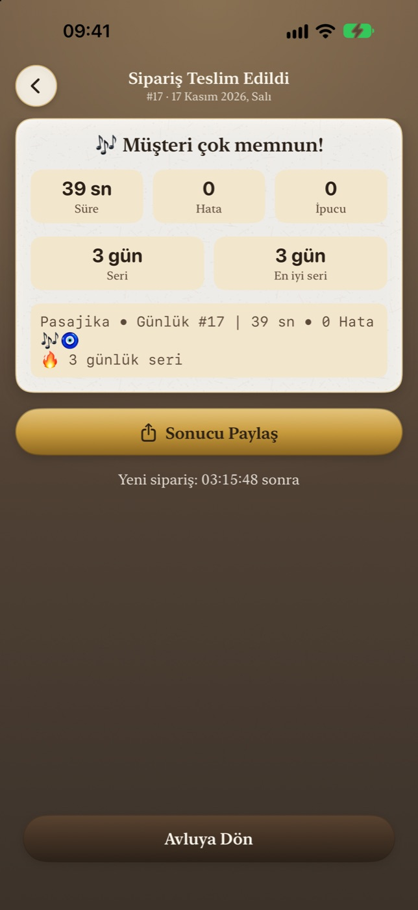
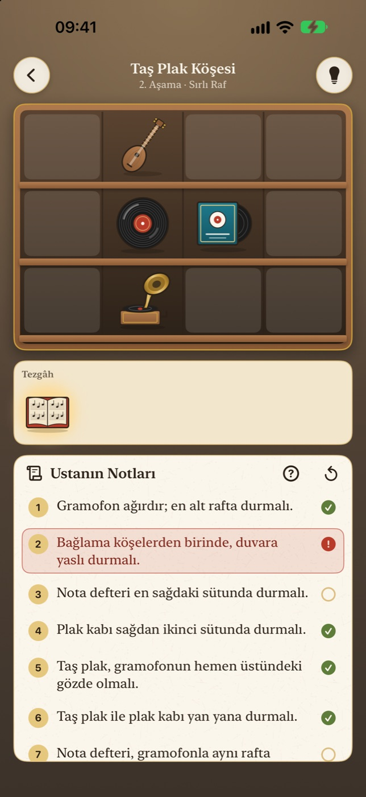
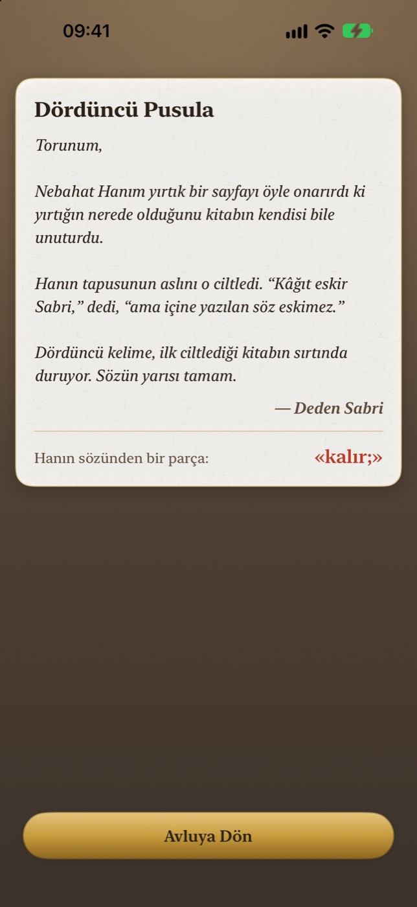
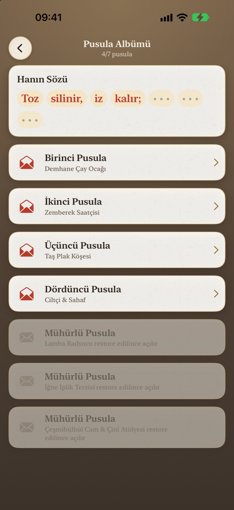

Türkçe günlük bulmaca oyunu
Pasajika: Sırlı Raf
Dedenden kalan İstanbul hanının yedi zanaat dükkânını tozdan arındır, ustaların notlarına göre rafları diz ve hanın sırrını çöz. Her gün herkes için aynı, yepyeni bir bulmaca seni bekliyor.
- iPhone · iOS 17+
- Reklamsız
- Hesap gerektirmez
- İnternetsiz oynanır
- Veri toplamaz

Nasıl oynanır?
Üç adımda bir dükkân
Her dükkân kendi hikâyesini, kendi eşyalarını ve kendi ustasının notlarını taşır.
-
Tozu sil
Parmağını vitrinin üzerinde gezdir; toz yavaş yavaş kalksın, altından pırıl pırıl bir dükkân çıksın. Hafif titreşimler ve fırça sesleri eşlik eder.
-
Rafı düzenle
Ustanın notları tek bir doğru düzeni anlatır. Eşyaları sürükle, bütün kuralları aynı anda sağla. Takılırsan ipucu bir sonraki doğru adımı gösterir.
-
Pusulayı aç
Her dükkânın gizli bölmesinden dedenin el yazısı bir pusulası çıkar. Yedi kelimeyi topla, hanın sözünü tamamla.
Her gün yeni
Günün Siparişi
Her sabah hanın bütün müşterileri aynı siparişi bekler. Bulmacayı çöz, serini büyüt, sonucunu arkadaşlarınla paylaş.
- Herkes aynı gün aynı bulmacayı çözer; sunucuya gerek yoktur.
- Hafta başı kolay, hafta ortası orta, hafta sonu usta işi.
- Süre, hata ve ipucu sayılır; her gün çözdükçe serin büyür.
- Sonucun tek dokunuşla WhatsApp ya da Instagram'da paylaşılır.

Ekranlar
Hanın içinden kareler




İlkelerimiz
Sadece sen ve oyun
Reklam yok
Oyunun ortasında açılan reklam, bekleme süresi ya da satın alma baskısı yoktur.
Hesap yok
Kayıt, giriş ya da e-posta istenmez. Uygulamayı aç ve oynamaya başla.
İnternetsiz
Bütün oyun, günlük bulmaca dahil, internet bağlantısı olmadan çalışır.
Veri toplanmaz
İlerlemen yalnızca kendi cihazında saklanır. Ayrıntılar gizlilik politikasında.